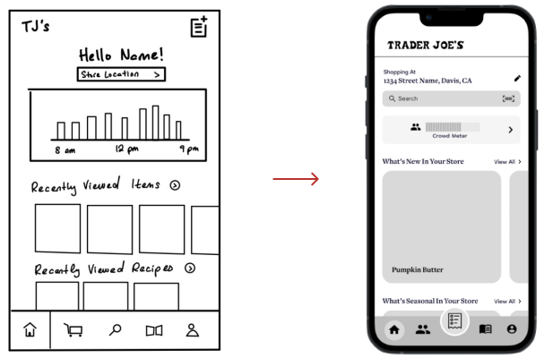

Overview
Trader Joe’s has developed a unique culture of their brand with their own collection of products and cult following, bringing up the opportunity to cater to their customer base through an application. With this in mind, we worked on a Trader Joe’s app across the course of six weeks.
Role
UX Research Lead, Hi-Fi Lead, UI/UX Design
Team
Karen Dang, Isabel Shic, Kaitlyn Lam, Nava Babaei (PM)
Duration
6 weeks
Oct 2022 - Nov 2022
Tools
Figma, Qualtrics
UNDERSTANDING: LITERATURE REVIEW
Trader Joe’s Website
We began by exploring the Trader Joe’s website to learn how the brand currently caters to its consumer base and find potential opportunities for improvement. We learned that the website mainly focuses on promoting its new products, recipes, and places a heavy emphasis on promoting its marketing tools such as their podcast, newsletter, and Fearless Flyer, the brand’s promotional flyer.
We also compared the Trader Joe’s website with similar grocery store websites using Similarweb, a traffic analysis tools, to see how the current website is doing in comparison to its competition.
The Trader Joe’s website receives significantly less traffic compared to other grocery store websites. This is quite shocking considering Trader Joe’s has over 2.9 million followers on Instagram but Whole Foods which has a similar amount of followers as Trader Joe’s with 3 million followers has more double the amount of monthly users on their website. In addition, Trader Joe’s hashtag on TikTok has over 4 billion total views while Whole Foods has only 844 million. From this we can see that Trader Joe’s has a much larger Gen Z and millennial fanbase and the current Trader Joe’s website is not captivating enough for them. With these two demographics being a mobile first generation, we decided to create a mobile app that better caters to their needs .
UNDERSTANDING: LITERATURE REVIEW
What Makes Trader Joe’s Unique?
We conducted some literature reviews on the Trader Joe’s brand to understand how we can personalize an app that reflects its unique qualities. According to Forbes and CNBC, Trader Joe’s sets itself apart from the competition by placing emphasis on constantly improving its in-store experience in the form of friendly staff members, customer-first model, low prices, hand-drawn signs, and unique products just to name a few. To reflect the brand’s values, we placed the emphasis of the app on enhancing the in-store experience.

UNDERSTANDING: PROBLEM STATEMENT
Problem Statement
How might we enhance the Trader Joe's store experience through efficiency and brand familiarity with an app?
With numerous grocery store apps available, distinguishing our app from the rest posed a challenge. Our objective was to embody the unique Trader Joe's brand and aesthetic by striking a balance between visual appeal and functionality.
USER RESEARCH: SURVEY
Hearing From Our Users
For our primary research, we conducted a survey because it enabled us to gather the most data in the least amount of time and reach various demographics. First, we wanted to learn about users’ basic background information to understand the makeup of our respondents, and it will become useful when we select potential interviewees. Next, we wanted to learn about their grocery shopping experience, such as which stores they prefer and why, as well as, whether they use any existing grocery store apps. Finally, we wanted to see how they engage or not engage with existing grocery store apps and what they are looking for in a good grocery store app. We made sure to not word questions that may result in bias or include any leading questions.
We created the survey on Qualtrics and began collecting data by sharing our QR code and URL with our peers and posting them on various Trader Joe’s fans Facebook group pages, as well as, canvassing at our local Trader Joe’s. Over the span of 2 weeks, we collected over 225 responses.
Survey Demographics
As college students we distributed the survey with many of our peers, thus 79% of our respondents are between the ages of 18-25.
Survey Key Findings
58%
58%
of users ranked Product Availability as a useful feature
50%
50%
of users ranked Branding as a factor that enhanced store experience
USER RESEARCH: INTERVIEWS
Listening To Our Users
My team and I conducted 5 user interviews who ranged from loyal Trader Joe’s fans to casual shoppers about their Trader Joe's experience and asking them to walk us through their journey of before, during, and after their shopping trip. Common key words mentioned by our interviews included lack of availability, forgetfulness, crowdedness, and lack of community. More about this will be elaborated down below.
USER RESEARCH: USER JOURNEY MAP
The Journey of a TJ Shopper
We also created a user journey map to visualize the journey a typical TJ shopper may take from before they shop to after they shop to better understand how they may feel and act during each stage. Through this process, we found many potential user pain points and helped us better empathize with our users.

USER RESEARCH: AFFINITY MAPPING
Finding Common Pain Points
We synthesized our data from user surveys and interviews through affinity mapping.

IDEATION
Pain Points and Solutions
From our affinity map, we developed four main pain points and began to ideate solutions for each pain point.
01
01
Product Availability
Brought up during our survey, interviews, and user journey, not knowing whether a product was in stock was the most common pain point. Due to its constant change in selection and consistently sold out products, many users have gone to Trader Joe's only to find products out of stock or pulled from shelves.
Solution: Product Availability Indicator and Alerts
We added an indicator on the home screen and product page to show whether a product is in stock, low in stock, or out of stock, so even before going to Trader Joe’s, shoppers can check a product’s availability and plan ahead. Shoppers can also turn on alerts to be reminded about product availability.

02
02
Forgetting Items
Forgetting to purchase items they planned on purchasing causes users to have to make an extra trip or change recipes.
Solution: Virtual Shopping List
To help shoppers remember what they need to get during their next Trader Joe’s trip, we designed a shopping list feature which allows shoppers to add items and create a virtual shopping list. Shoppers can also check the total amount before checkout to ensure that they stay within budget.
03
03
Shopping At A Busy Store
Users want to avoid going to Trader Joe's when it is too busy because it is hard to get around the store and check out takes a long time.
Solution: Live Crowd Meter
We added a live crowd meter to help users gauge when to shop and avoid busy crowds.
04
04
Lack of Social Features
Fans of Trader Joe's wanted social features such as being able to share their thoughts on different products and view other's reviews to discover new products. Though there are currently platforms that fans can use for this purpose, there are way too many different platforms resulting in a scattered experience.

Solution: Social Page
We designed a Social Page to encourage engagement with Trader Joe’s products through voting and popularity ranking, as well as, provide a platform for Trader Joe’s fans to share their opinions on various products in the form of reviews.
IDEATION
Pain Points We Chose Not To Focus On
There were some common pain points that we chose not to focus on for this sprint because they were not compatible with Trader Joe’s and did not align with their branding.
01
Deals & Discounts
From our research, we learned that users care most about price when shopping at Trader Joe's and mainly use other grocery store apps to find deals and discounts; however, we chose not to focus on this pain point to stay true to Trader Joe's branding because Trader Joe's almost never has any deals and prides itself as having some of the lowest prices in the market.
02
Location of Product
One popular feature that our survey respondents wanted to see in a grocery store app was the location of the product. However, though this may be useful for other grocery stores, this would not fit well with Trader Joe's due to the following reasons:
- Trader Joe's does not currently have an existing store organization system unlike Target or Safeway which label their aisles. We did not want to invent a new store organization system which would confuse users.
- Trader Joe's prides itself in its excellent store experience, thus the goal is to have shoppers naturally walk around the store and explore all of its products.
- The store is so small that users can easily find all the items they need with minimal effort.
USABILITY TESTING
Testing Our Prototype
We conducted 4 usability tests on our mid-fidelity prototype, by having users complete 3 sets of tasks for each stage of the grocery shopping process to test the user’s ability to navigate the app and learn about their overall first impressions.
USABILITY TESTING
Refining Features
Gathering all of the findings from our tests, we made the following changes:
01 Reusable Shopping List
The shopping list was initially designed to be a one-time use list for each shopping trip. However, users shared that they usually get the same items each time and it is time-consuming to keep creating new lists each time. Thus, we refined our shopping list to be reusable.
02 Social Page to Focus on Friends
Based on user feedback, we learned that our users cared more about what their friends had to say about a product rather than that of the general public. Thus, we edited the Social Page to focus more on staying up-to-date on their friends’ opinions about products and activity.
03 Added An Onboarding Flow
While testing, our users were confused due to our many features. Thus, we designed an onboarding to guide them through our features such as the shopping lists, collections, and more. They can access this at any time through a button on the Home Page.
HI-FI PROTOTYPE
Enhancing the TJ shopping experience

Onboarding
The many features might be confusing for new users, so an onboarding section is available to introduce the different features and result in a smoother user flow. To brush up their memory, users can access the Onboarding Pages on the Home Page at any time.
Home Page
Designed to enhance the in-store experience. Key features on this page include a crowd meter, easy access to view all new and seasonal products, and a product scanner to quickly learn more about a product or add it to their shopping list.


Shopping List
Users can create a shopping list before they go to the store so they never forget to purchase an item. The shopping list is divided by category to make it easier to navigate. Users can also add items directly from the Shopping List Page so they do not need to navigate to a new page.
At the store, users can check off items on their shopping list as they place the item in their cart. Once an item has been checked off, the cost of the item will be added to the total, so users can always stay within budget.
Collections
Users can bookmark items and organize them into different Collections, which can accessed through the Profile Page.


Product Alerts
Users have access to 4 types of product alerts so they never miss a product.
Restock Alert for out of stock items.
Back In Season Alert to notify users that their favorite seasonal items are back.
Out of Season Alert to remind users to stock up on their favorite seasonal items before they leave the shelves.
Discontinued Soon Alert to alert users to stock up on their favorite items before they are discontinued indefinitely.
Social Page
Users can add their contacts as friends to view each other's Collections and reviews.

Onboarding
The many features might be confusing for new users, so an onboarding section is available to introduce the different features and result in a smoother user flow. To brush up their memory, users can access the Onboarding Pages on the Home Page at any time.
Home Page
Designed to cater towards the in-store experience. Key features on this app include a crowd meter, easy access to view all new and season products, and a product scanner to learn more about and product or add it to their shopping list.
Shopping List
Users can create a shopping list before they go to the store so they never forget to purchase an item. The shopping list is divided by category to make it easier to navigate. Users can also add items directly from the Shopping List Page so they do not need to navigate to a new page.
At the store, users can check off items on their shopping list as they place the item in their cart. Once an item has been checked off, the cost of the item will be added to the total, so users can always stay within budget.
Collections
Users can bookmark items and organize them into different Collections, which can accessed through the Profile Page.
Product Alerts
Users have access to 4 types of product alerts so they never miss a product.
Restock Alert for out of stock items.
Back In Season Alert to notify users that their favorite seasonal items are back.
Out of Season Alert to remind users to stock up on their favorite seasonal items before they leave the shelves.
Discontinued Soon Alert to alert users to stock up on their favorite items before they are discontinued indefinitely.
Socials Page
Users can add their contacts as friends to view each other's Collections and reviews.
HI-FI PROTOTYPE
Design System
With sketched graphics and a familiar color scheme resembling the Trader Joe’s website and packaging, we hope our app captures the unique Trader Joe’s shopping experience.

CONCLUSION
Presentation Day
We presented our project to a panel of industry professionals on Presentation Day, an event hosted by Design Interactive, the first UX organization at UC Davis. We were awarded the Audience Choice Award and the Best Storytelling Award .

CONCLUSION
Takeaways
This was my first time being user research lead and it was quite intimidating since I have never lead any part of a design sprint before; however, it proved to be a valuable experience as now I gained experience delegating tasks, spearheading user research, and experimenting with various methods to gather data. This was also my first time using Qualtrics and it definitely changed the game for me when it comes to creating surveys as there is a lot more customization that I can do, as well as, different ways to display data.
Another important skill I learned was working with a design system. Previously, I had a poor habit of designing without a comprehensive design system, which resulted in unconsistent designs especially when I worked with other team members. Though creating the design system did take time, it proved to be extremely useful in making sure all of our designs were uniform and changes could easily be made.
CONCLUSION
Challenges
Our biggest challenge was that we had many features in mind (i.e. socials page with poll voting, featured customer reviews, having different grocery lists) and had a difficult time eliminating/reorganize these features. Hi-fi prototyping was also quite challenging since this was the first time I had to do any difficult prototyping on Figma. However, I think that by being Hi-fi lead, it really pushed me to learn and experiment with the prototype tools in Figma, and overall was a great learning experience.
CONCLUSION
Next Steps
Given more time, I would like to focus on interviewing more loyal fans of Trader Joe’s as opposed to just casual shoppers. I would also like to conduct more usability tests on the high fidelity prototype to improve the user flow. In addition, I would also like to develop the following features that my team and I previously ideated but were not able to get to:
- Expand Social Page to promote interaction between friends such as the addition of collaborative Collections.
- Build out the Recipes Page and allow users to submit recipes to be highlighted on the Recipes Page
- Add a feature that allows customers to report product availability for better accuracy